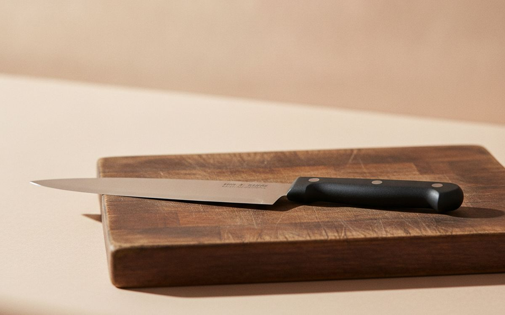
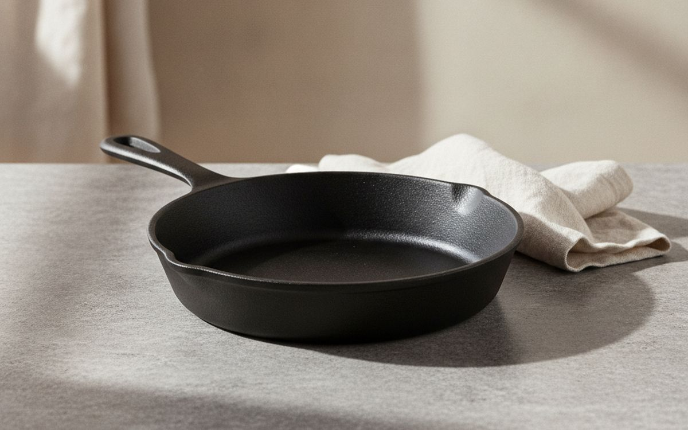
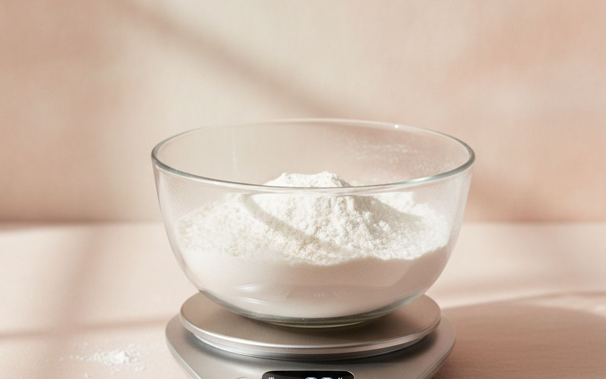
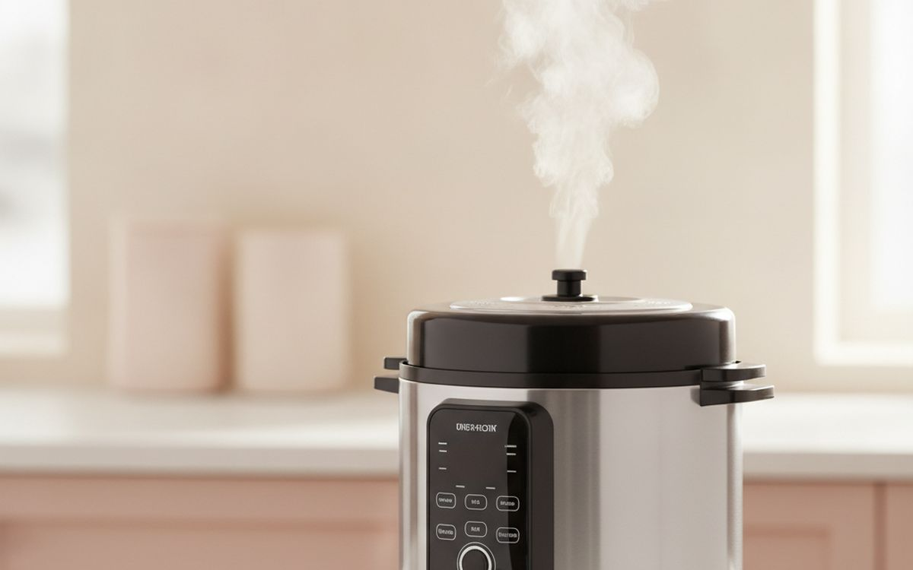
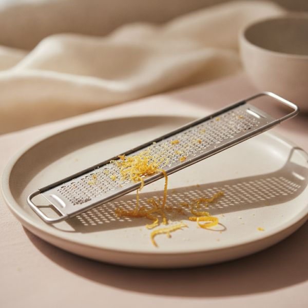
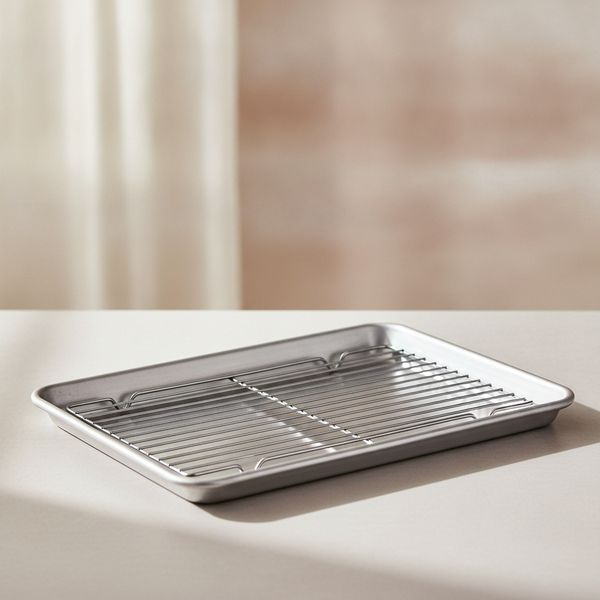
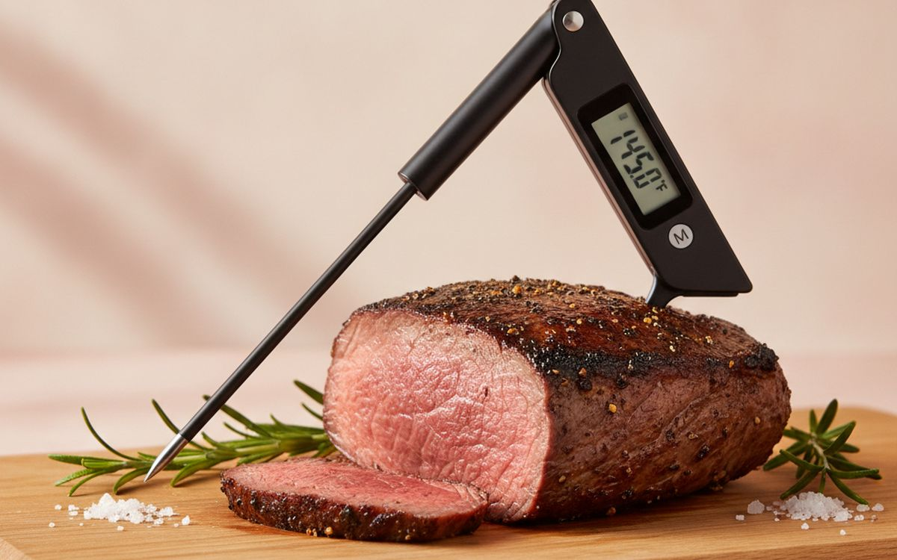
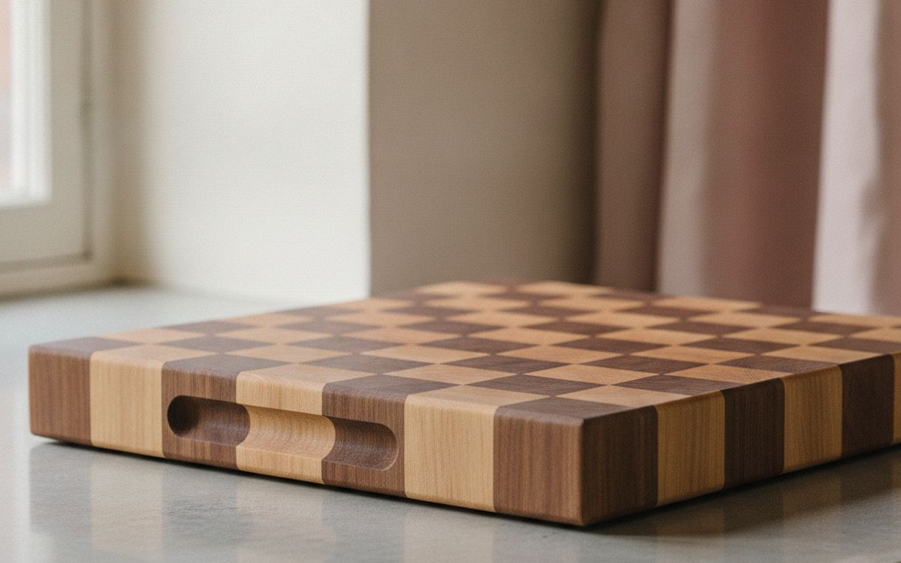
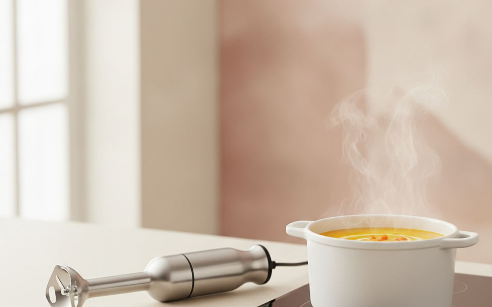
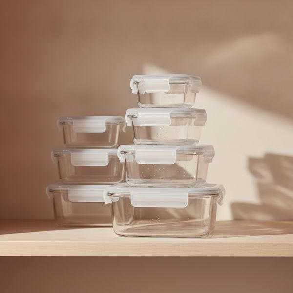

Every kitchen has a drawer of gadgets used twice. These are the ones still in reach after five years.
The single-purpose gadget is the enemy of a good kitchen. The avocado slicer, the herb stripper, the electric egg cooker — each solves a problem that a knife already solved, and each one takes up the drawer space that should belong to something you reach for daily.
So this list is deliberately weighted toward tools that do many jobs and last decades. Several are things you probably already own in a bad version, and replacing a bad one is a far bigger upgrade than buying a new category of thing.
Prices are approximate at the time of writing. Good kitchen equipment goes on sale predictably around November, so if nothing here is urgent, waiting is a legitimate strategy.
Disclosure. The links on this page are affiliate links. If you buy through one we may earn a commission at no extra cost to you. It does not affect what makes this list or the order it is in.
How we picked
We prioritise tools that do several jobs, survive daily use for years and can be sharpened, reseasoned or repaired rather than replaced. Our reading draws on published equipment testing, professional kitchen practice and long-run owner reports. We have not personally cooked with every item listed. Where the sensible answer is that you already own this and simply need a better one, we say that instead of upselling you.
At a glance
Prices are approximate at the time of writing and change often.
The picks

1
The one to buy firstVictorinox Fibrox 8-inch chef's knife
$40–55
This knife has topped independent equipment tests for two decades, and it costs less than a takeaway for four. It is light, the handle grips even when wet, and the steel is soft enough to sharpen easily and hard enough to hold an edge through normal home use. The expensive Japanese alternatives are genuinely better in skilled hands and genuinely worse in careless ones — harder steel chips if you hit a bone or twist through squash. Buy this, spend the difference on a sharpener, and replace it in ten years without feeling anything.
Why it is here
- Beats knives costing five times more in blind tests
- Grippy handle stays safe when wet
- Easy to sharpen at home
Worth knowing
- Plain looking — this is a tool, not an heirloom
- Softer steel needs honing more often

2
Best value in the kitchenLodge 10-inch cast iron skillet
$25–40
A cast iron pan costs about the same as a mid-range nonstick and outlives it by roughly forty years. It holds heat well enough to sear properly, goes from hob to oven without a thought, and becomes more nonstick with use rather than less. The maintenance story is overblown: dry it after washing and rub in a little oil occasionally. The real drawbacks are honest ones — it is heavy, it takes longer to preheat than aluminium, and highly acidic sauces will strip the seasoning, so keep a separate pan for tomato work.
Why it is here
- Outlasts nonstick by decades
- Sears better than almost anything at this price
- Hob to oven to table
Worth knowing
- Heavy — an issue for some wrists
- Acidic sauces strip the seasoning

3
Cheapest accuracy upgradeDigital kitchen scale (1g resolution)
$15–30
Cup measurements are a bad unit for anything dry. A cup of flour can vary by twenty percent depending on how it was scooped, which is most of the reason home baking is inconsistent. A scale removes that variance entirely, and the tare button means you weigh everything into one bowl and wash one bowl. It is the cheapest item here and one of the two or three that most improves results. Get one that reads in grams and switches off slowly — the ones that cut out after thirty seconds are maddening mid-recipe.
Why it is here
- Removes the biggest source of baking error
- Tare means fewer bowls to wash
- Costs less than one failed cake
Worth knowing
- Needs batteries at the worst moment
- Aggressive auto-off is genuinely annoying

4
Best for weeknight cookingInstant Pot Duo or similar multicooker
$80–130
The genuine case for this is pressure cooking, which turns dried beans, tough cuts and stock from weekend projects into weeknight food. Chickpeas from dry in forty minutes, a stew that would need three hours in one. The other eight functions printed on the box are mostly mediocre versions of things your hob already does, and the yoghurt setting will be used once. Judge it purely as a pressure cooker that also happens to keep rice warm, and it is excellent value. Judge it as the nine appliances it claims to replace and you will be disappointed.
Why it is here
- Turns long-cook food into weeknight food
- Cheap dried beans and pulses become practical
- Contained, no steam over the whole kitchen
Worth knowing
- Most of the advertised functions are mediocre
- Big, and awkward to store

5
Small tool, big effectMicroplane fine grater
$18–30
This is the exception to the no-single-purpose-gadget rule, because the single purpose it serves is adding aroma to almost everything. Garlic becomes a paste that melts into a sauce rather than sitting in chunks you bite into later. Parmesan turns into snow that dissolves through pasta instead of clumping. Lemon zest, nutmeg, fresh ginger, hard chocolate, dried chilli — all things a box grater mangles and this handles perfectly, because the etched teeth cut rather than tear. The design came from a woodworking rasp, which is exactly why it works. It is genuinely razor sharp, and that is the point, so watch your knuckles as you reach the end of a block and always wash it facing away from your hand.
Why it is here
- Transforms garlic, citrus and hard cheese
- Cheap, and lasts years
- Takes almost no drawer space
Worth knowing
- Genuinely sharp — a real cut hazard
- Not a replacement for a box grater

6
Most used, least glamorousHalf-sheet pan and wire rack
$25–40 for two
A heavy aluminium sheet pan is the true workhorse of a home kitchen: roasting vegetables, sheet-pan dinners, baking biscuits, cooling cakes, catching drips under something messy. Thin supermarket trays warp violently the first time they meet a hot oven, and that buckling sends oil running into one corner, so half the tray burns while the other half steams. Heavier gauge aluminium simply does not do this, and it costs very little more. Add the wire rack and the pan becomes a roasting setup: air circulates underneath the food, which is how you get chicken skin crisp on every side instead of soggy where it sat. Buy two — you will use both most weeks.
Why it is here
- Used more than any other item here
- Heavy gauge will not warp in a hot oven
- Rack turns it into a roasting setup
Worth knowing
- Needs a matching oven size — measure first
- Aluminium discolours; that is cosmetic only

7
Ends guesswork on meatInstant-read thermometer (Thermapen or similar)
$35–110
Poking a chicken and hoping is how good ingredients get ruined. A fast thermometer removes the single biggest variable in cooking protein, and the difference between a two-second read and a fifteen-second one matters more than it sounds when the oven door is open and the heat is escaping. It is also the only way to be confident poultry is safe without cooking it to the texture of rope. Cheaper models work fine and are simply slower; the premium ones buy speed and accuracy, not a different outcome.
Why it is here
- Removes the main variable in cooking meat
- Food safety without overcooking
- Useful for bread, oil and custards too
Worth knowing
- The fast premium models are expensive
- Another battery to remember

8
Kinder to your knivesLarge end-grain wooden cutting board
$50–120
Glass and hard plastic boards blunt a knife every time it lands. Wood lets the edge sink slightly and close again, so the blade stays sharp far longer, and end-grain construction does this best. Size matters more than people expect: a board too small to hold a chopped onion plus the next ingredient is why kitchens feel chaotic. Wood needs occasional oiling and must not go in a dishwasher. If that sounds like too much, a thick soft-plastic board is a perfectly respectable second choice and goes straight in the machine.
Why it is here
- Keeps knives sharp much longer
- Large working area reduces chaos
- Repairable — sand and re-oil
Worth knowing
- Hand wash only, needs oiling
- Heavy, and expensive at good sizes

9
Better than a blender for most jobsImmersion blender with whisk attachment
$45–90
For soup, a stick blender is simply better than a jug blender: you blend in the pot, there is nothing to decant, and you avoid the genuine hazard of hot liquid building pressure in a sealed jug. It also makes mayonnaise and aioli more reliably than any other method, in about thirty seconds, in the cup it comes with. It will not crush ice or make a smooth nut butter — that is what the big blender is for. But it handles the jobs that come up weekly rather than yearly, and it washes under a tap in five seconds.
Why it is here
- Blend directly in the pot
- Safest way to blend hot liquid
- Washes in seconds
Worth knowing
- Cannot crush ice or grind nuts
- Cheap models burn out under heavy use

10
Best for actually eating leftoversGlass storage containers with locking lids
$40–70 for a set
Leftovers get thrown away because nobody can see what is in the opaque tub at the back of the fridge. Glass fixes that, and it goes from fridge to oven or microwave without decanting, which removes the step where people give up and order food instead. It does not stain from turmeric or tomato and it does not hold onto smells the way plastic does. The trade-offs are real: glass is heavy, it breaks, and it is a poor choice for a lunchbox carried by a child. Keep a few plastic ones for travel.
Why it is here
- You can see the food, so you eat it
- Fridge to oven with no decanting
- Does not stain or hold smells
Worth knowing
- Heavy, and breaks if dropped
- Poor choice for children's lunchboxes
Common questions
What is the single best thing to spend money on?
A knife you enjoy using and a way to keep it sharp. A sharp mediocre knife outperforms a blunt expensive one, and most kitchen frustration traces back to a dull blade.
Is nonstick worth buying at all?
One nonstick pan for eggs and delicate fish, yes. Treat it as a consumable that lasts three to five years, keep it under medium heat, and never use metal on it.
Do I need a stand mixer?
Only if you bake bread or cakes most weeks. Otherwise it is a very expensive object that occupies prime counter space, and a hand mixer or an immersion blender covers what you actually do.
How often should I sharpen my knife?
Hone with a steel every few uses to straighten the edge, and properly sharpen once or twice a year for home cooking. If a knife will not slice a tomato skin without pressure, it needs sharpening now.
← All guides
We have applied to the Amazon Associates Program. We are not an Amazon Associate yet and earn nothing from Amazon links today. Prices and availability are accurate as of the date of publication and may change.